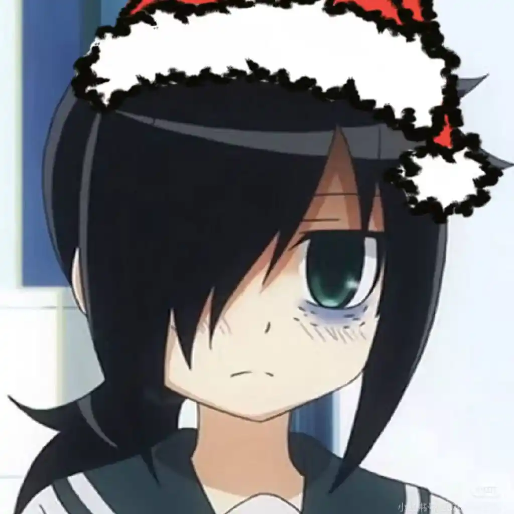

- さよなら、すべてのエヴァンゲリオン
- 新世紀 エヴァンゲリオン
NERV
↓ プロフィール ↓
Please use a computer or widescreen device to view
NERV
↓ プロフィール ↓
兄と妹

兄は四折、妹は玉藻
ただの平凡で、哀れでも憎らしい人間に過ぎない
記憶と思考回路が私を形作る。私は生体コンピュータだ
ページ I / 無限級数
私には自身の感情や性向があり、典型的なタイプではありません。理解を求めず、どうか傷つけないでください。
人と人との繋がりは私にとって大切です。人間関係に繊細なので、私の気持ちに気を配ってください。
悲しみを語る時、それは冗談や自虐ではなく、変えようのない現実を嘆いているだけなのです。
みんなでレインを愛そう
ページ II / 無限級数
参考のみ
ページ III / 無限級数
星の王子さま
ツァラトゥストラはこう語った
落ち葉をつかむ
人類補完計画
走れメロス
野草
芥川龍之介全集
夜は短し歩けよ乙女！
参考のみ
ページ IV / 無限級数
Minecraft
紙の家
L4D2
ドント・スターブ
ファクトリオ
CS2
OW2
リトルナイトメア2
>参考のみ
ページ V / 無限級数
新世紀エヴァンゲリオン / 銀魂 / げんしけん / PLUTO 冥王 / 終末ホテル / Ｄｒ．ＳＴＯＮＥ / RWBY
魔法少女まどか☆マギカ / ピンポン / 剣侠情義 沈剣心 / 天元突破グレンラガン / 日常 / ウルトラマンティガ / 涼宮ハルヒの憂鬱 / 攻殻機動隊
ぼっち・ざ・ろっく！ / けものフレンズ / モブサイコ100 / トップをねらえ！ / ヒモママ / 科学忍者隊ガッチャマン Crowds / メイドインアビス
サマータイムレンダ / 小林さんちのメイドラゴン / ツギハギ英雄 BABA / 火玉 ユーモア編 / 宝石の国 / シドニアの騎士 / 蟲師
DDD 悪魔の破壊 / NO GAME NO LIFE / さよなら絶望先生 / キルラキル / FLCL
>参考のみ
ページ VI / 無限級数
欲しかったものはすべて手に入れたのに、なぜこんなに空虚な気持ちが消えないの？
もし神がいるのなら、この悲しき少年の未来を断ち切ってください。
もし私を愛してくれる人がいるのなら、強く抱きしめて、 死にゆく私を止めて！
空虚な世界、すべてが無意味だ。